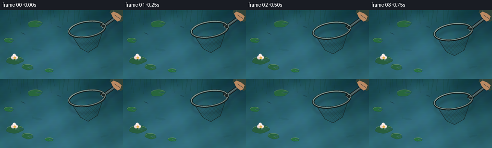
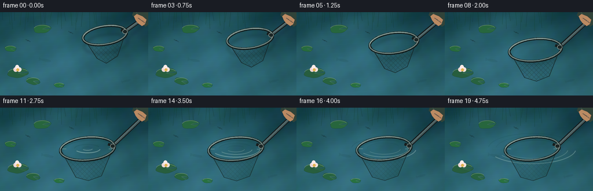
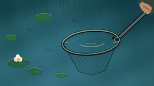

CODING AGENTS AS PIXEL WORLD MODELS
traex/GPT-5.6-Sol · mechanics_0013
点击播放 · 原生 RGB 像素
逐轮保存的候选
回放视频、检查图与代码变化。
每份候选均可单独播放。实际图片检查记录在下方工具轨迹中。
候选 01播放与检查图
点击播放 · 原生 RGB 像素


展开代码变化
--- 上一保存版本
+++ 本次保存版本
@@ -0,0 +1,273 @@
+from pathlib import Path
+import math
+import numpy as np
+from PIL import Image, ImageDraw, ImageFilter
+import artifact_io
+
+# Deterministic, hand-rendered 2-D animation of a landing net being lowered onto a pond.
+W, H, N = 256, 144, 20
+S = 4
+WS, HS = W*S, H*S
+rng = np.random.default_rng(1307)
+
+def smoothstep(x):
+ x = max(0.0, min(1.0, x))
+ return x*x*(3-2*x)
+
+def scpt(p):
+ return tuple(int(round(v*S)) for v in p)
+
+def draw_rot_ellipse(draw, center, rx, ry, angle, fill, width=1, samples=160):
+ ca, sa = math.cos(angle), math.sin(angle)
+ pts=[]
+ for i in range(samples+1):
+ q=2*math.pi*i/samples
+ x,y=rx*math.cos(q),ry*math.sin(q)
+ pts.append(scpt((center[0]+x*ca-y*sa, center[1]+x*sa+y*ca)))
+ draw.line(pts, fill=fill, width=max(1,int(width*S)), joint='curve')
+
+def transformed(cx,cy,angle,x,y):
+ ca,sa=math.cos(angle),math.sin(angle)
+ return cx+x*ca-y*sa, cy+x*sa+y*ca
+
+def low_noise(seed, grid=(12,20), blur=8):
+ rr=np.random.default_rng(seed)
+ a=(rr.random(grid)*255).astype(np.uint8)
+ im=Image.fromarray(a).resize((WS,HS),Image.Resampling.BICUBIC).filter(ImageFilter.GaussianBlur(blur*S))
+ return np.asarray(im).astype(np.float32)/255.
+
+noise_a=low_noise(2,(10,18),5)
+noise_b=low_noise(9,(18,30),2)
+Y,X=np.mgrid[0:HS,0:WS]
+x=X/S; y=Y/S
+
+# Static pond furniture on transparent overlays.
+def make_pond_details():
+ layer=Image.new('RGBA',(WS,HS),(0,0,0,0)); d=ImageDraw.Draw(layer,'RGBA')
+ # Soft reflected reeds at the upper edge.
+ for i in range(24):
+ bx=4+i*7.8+3*math.sin(i*1.7)
+ length=13+20*((i*37)%11)/10
+ col=(16,48+((i*13)%18),40,70)
+ d.line([scpt((bx,-2)),scpt((bx+3*math.sin(i),length))],fill=col,width=max(1,S))
+ # lily pads (irregular polygons, vein detail and highlights)
+ pads=[(31,105,18,8,-.08),(57,119,12,6,.17),(73,29,15,7,-.12),(18,63,10,5,.10),(102,126,9,4,.06)]
+ for k,(cx,cy,rx,ry,ang) in enumerate(pads):
+ ca,sa=math.cos(ang),math.sin(ang)
+ pts=[]
+ for j in range(48):
+ q=2*math.pi*j/48
+ wob=1+.045*math.sin(5*q+k)
+ px=rx*wob*math.cos(q); py=ry*wob*math.sin(q)
+ pts.append(scpt((cx+px*ca-py*sa,cy+px*sa+py*ca)))
+ d.polygon(pts,fill=(39,93+5*k,58,235),outline=(18,64,43,245))
+ # characteristic notch
+ notch=[transformed(cx,cy,ang,0,0),transformed(cx,cy,ang,rx*1.04,-ry*.20),transformed(cx,cy,ang,rx*.88,ry*.18)]
+ d.polygon([scpt(p) for p in notch],fill=(37,91,87,255))
+ for frac in (-.65,-.25,.3,.7):
+ d.line([scpt((cx,cy)),scpt(transformed(cx,cy,ang,rx*.78,ry*frac))],fill=(98,139,75,105),width=max(1,S//2))
+ d.arc([int((cx-rx)*S),int((cy-ry)*S),int((cx+rx)*S),int((cy+ry)*S)],195,335,fill=(131,165,99,140),width=S)
+ # small water lily, safely away from net
+ d.ellipse([*scpt((23,95)),*scpt((31,103))],fill=(242,218,218,245))
+ d.ellipse([*scpt((29,95)),*scpt((37,103))],fill=(249,230,224,245))
+ d.ellipse([*scpt((26,91)),*scpt((33,100))],fill=(255,238,234,250))
+ d.ellipse([*scpt((28,97)),*scpt((33,102))],fill=(226,178,82,255))
+ return layer
+pond_details=make_pond_details()
+
+def pond_frame(i):
+ # deep green-blue water with broad sky and foliage reflections
+ phase=i*.19
+ broad=np.sin((x*.047)+(y*.103)+phase)+.48*np.sin(x*.095-y*.036-phase*.65)
+ fine=np.sin(x*.34+y*.115+phase*1.5)*np.sin(y*.23-phase*.7)
+ sky=np.exp(-((x-102)/85)**2-((y-73)/82)**2)
+ shade=np.exp(-((x-245)/60)**2-((y-9)/47)**2)+.5*np.exp(-((x-3)/48)**2-((y-4)/35)**2)
+ r=22+21*(y/H)+14*sky-9*shade+3*broad+4*(noise_a-.5)
+ g=69+30*(y/H)+21*sky-17*shade+4*broad+5*(noise_b-.5)
+ b=73+37*(y/H)+29*sky-10*shade+5*broad+3*fine
+ arr=np.stack([r,g,b],axis=-1)
+ # horizontal hairline glints and ripples in the water texture
+ gl=(np.maximum(0,np.sin(y*.82+x*.055+phase*2.2)-.91)*25)
+ arr += gl[...,None]*np.array([.45,.75,.82])
+ arr=np.clip(arr,0,255).astype(np.uint8)
+ im=Image.fromarray(arr,'RGB').convert('RGBA')
+ # drifting, blurred reflection streaks
+ refl=Image.new('RGBA',(WS,HS),(0,0,0,0)); rd=ImageDraw.Draw(refl,'RGBA')
+ for j in range(19):
+ yy=8+j*7.4+1.0*math.sin(j*1.9+phase)
+ xx=5+((j*47)%235)
+ leng=9+((j*19)%27)
+ rd.line([scpt((xx,yy)),scpt((min(255,xx+leng),yy+.4*math.sin(j)))],fill=(166,196,185,22),width=max(1,S//2))
+ im=Image.alpha_composite(im,refl.filter(ImageFilter.GaussianBlur(.45*S)))
+ im=Image.alpha_composite(im,pond_details)
+ return im
+
+def add_fish_and_insects(im,i):
+ # faint fish silhouettes below water: atmosphere, never competing with the net
+ lay=Image.new('RGBA',(WS,HS),(0,0,0,0)); d=ImageDraw.Draw(lay,'RGBA')
+ for k,(bx,by,ang,sz) in enumerate([(79,83,.18,9),(219,118,-.25,7)]):
+ bx += .38*i*(1 if k==0 else -.55)
+ by += .45*math.sin(i*.21+k)
+ ca,sa=math.cos(ang),math.sin(ang)
+ body=[]
+ for j in range(20):
+ q=2*math.pi*j/20
+ px=sz*math.cos(q); py=sz*.25*math.sin(q)
+ body.append(scpt((bx+px*ca-py*sa,by+px*sa+py*ca)))
+ d.polygon(body,fill=(18,55,53,28))
+ tail=[transformed(bx,by,ang,-sz*.8,0),transformed(bx,by,ang,-sz*1.35,-sz*.35),transformed(bx,by,ang,-sz*1.3,sz*.35)]
+ d.polygon([scpt(p) for p in tail],fill=(18,55,53,23))
+ # two tiny pond skater dimples
+ for k,(bx,by) in enumerate([(122,35),(47,49)]):
+ bx+=1.4*math.sin(i*.12+k)
+ d.ellipse([*scpt((bx-1.2,by-.45)),*scpt((bx+1.2,by+.45))],fill=(16,32,31,150))
+ d.line([scpt((bx-1,by)),scpt((bx-4,by-2))],fill=(15,35,34,90),width=1*S)
+ d.line([scpt((bx+1,by)),scpt((bx+4,by+2))],fill=(15,35,34,90),width=1*S)
+ return Image.alpha_composite(im,lay.filter(ImageFilter.GaussianBlur(.35*S)))
+
+def net_geometry(i):
+ p=smoothstep(i/11.0)
+ # a tiny settling bob after the gentle contact
+ settle=0 if i<11 else 0.8*math.sin((i-11)*.75)*math.exp(-(i-11)*.18)
+ cx=181+(151-181)*p
+ cy=40+(71-40)*p+settle
+ rx=38+(47-38)*p
+ ry=16+(20-16)*p
+ ang=math.radians(-9+4*p)
+ return cx,cy,rx,ry,ang,p
+
+def add_shadow(im,i,geo):
+ cx,cy,rx,ry,ang,p=geo
+ # lowering is shown by the shadow/reflection closing the gap to the net
+ gap=13*(1-p)+1.5
+ sh=Image.new('RGBA',(WS,HS),(0,0,0,0)); sd=ImageDraw.Draw(sh,'RGBA')
+ draw_rot_ellipse(sd,(cx+2,cy+gap),rx,ry,ang,(8,30,34,int(64-20*p)),2.8)
+ # blurred shadow from handle
+ attach=transformed(cx,cy,ang,rx*.91,-1)
+ sd.line([scpt((attach[0]+2,attach[1]+gap)),scpt((265,1+gap*.35))],fill=(8,27,29,45),width=4*S)
+ return Image.alpha_composite(im,sh.filter(ImageFilter.GaussianBlur(2.4*S)))
+
+def add_ripples(im,i,geo):
+ if i<9: return im
+ cx,cy,rx,ry,ang,p=geo
+ age=i-9
+ lay=Image.new('RGBA',(WS,HS),(0,0,0,0)); d=ImageDraw.Draw(lay,'RGBA')
+ # darkened meniscus just inside the hoop
+ draw_rot_ellipse(d,(cx,cy+1),rx*.93,ry*.82,ang,(12,60,66,32),2.2)
+ # expanding concentric capillary rings, faint and broken
+ for k in range(3):
+ rr=7+age*5.0-k*10
+ if rr<=2: continue
+ alpha=int(max(0,118-age*4-k*18))
+ # water-plane ellipses (wide and shallow) around impact point
+ box=[int((cx-rr*1.34)*S),int((cy-rr*.47)*S),int((cx+rr*1.34)*S),int((cy+rr*.47)*S)]
+ d.arc(box,8,147,fill=(180,218,211,alpha),width=max(S,2*S-k))
+ d.arc(box,187,332,fill=(12,74,81,alpha//2),width=S)
+ # contact sparkles where metal meets water
+ for side in (-1,1):
+ px,py=transformed(cx,cy,ang,side*rx*.86,side*ry*.18)
+ d.line([scpt((px-4,py)),scpt((px+4,py))],fill=(203,232,221,125),width=S)
+ return Image.alpha_composite(im,lay.filter(ImageFilter.GaussianBlur(.22*S)))
+
+def add_net(im,i,geo):
+ cx,cy,rx,ry,ang,p=geo
+ contact=smoothstep((i-8)/5)
+ apex_local=(-5+2*p, 48+7*p)
+ left=transformed(cx,cy,ang,-rx*.96,0)
+ right=transformed(cx,cy,ang,rx*.96,0)
+ apex=transformed(cx,cy,ang,*apex_local)
+ # mesh bag silhouette and diamond lattice, clipped to a sagging bag polygon
+ bag=Image.new('RGBA',(WS,HS),(0,0,0,0))
+ mask=Image.new('L',(WS,HS),0); md=ImageDraw.Draw(mask)
+ # curving bag boundary includes lower lip of ellipse
+ boundary=[]
+ for j in range(25):
+ q=math.pi-j*math.pi/24
+ boundary.append(scpt(transformed(cx,cy,ang,rx*math.cos(q),ry*math.sin(q))))
+ boundary += [scpt(transformed(cx,cy,ang,rx*.42,39+10*p)),scpt(apex),scpt(transformed(cx,cy,ang,-rx*.52,37+10*p))]
+ md.polygon(boundary,fill=255)
+ bd=ImageDraw.Draw(bag,'RGBA')
+ fill_alpha=int(24+19*contact)
+ bd.polygon(boundary,fill=(20,48,48,fill_alpha))
+ # diagonals form recognizable knotted diamond mesh
+ minx=int((cx-rx-8)*S); maxx=int((cx+rx+10)*S)
+ miny=int((cy-ry-3)*S); maxy=int((apex[1]+6)*S)
+ spacing=8*S
+ mesh_alpha=int(116-30*contact)
+ for off in range(minx-maxy,maxx-miny,spacing):
+ bd.line([(off+miny,miny),(off+maxy,maxy)],fill=(23,40,39,mesh_alpha),width=max(2,S//2))
+ for off in range(minx+miny,maxx+maxy,spacing):
+ bd.line([(off-miny,miny),(off-maxy,maxy)],fill=(28,46,44,mesh_alpha),width=max(2,S//2))
+ # preserve only the bag shape
+ alpha=np.array(bag.getchannel('A'),dtype=np.uint8)
+ alpha=np.minimum(alpha,np.array(mask,dtype=np.uint8))
+ bag.putalpha(Image.fromarray(alpha))
+ # submerged mesh has a softened aqua veil
+ if contact>0:
+ veil=Image.new('RGBA',(WS,HS),(38,112,119,int(36*contact)))
+ veil.putalpha(Image.fromarray((np.array(mask)*(.12*contact)).astype(np.uint8)))
+ bag=Image.alpha_composite(bag,veil)
+ im=Image.alpha_composite(im,bag)
+
+ # Outer bag seams, handle and solid hoop.
+ top=Image.new('RGBA',(WS,HS),(0,0,0,0)); d=ImageDraw.Draw(top,'RGBA')
+ edgecol=(20,34,33,int(205-30*contact))
+ d.line([scpt(left),scpt(transformed(cx,cy,ang,-rx*.52,37+10*p)),scpt(apex)],fill=edgecol,width=1*S,joint='curve')
+ d.line([scpt(right),scpt(transformed(cx,cy,ang,rx*.42,39+10*p)),scpt(apex)],fill=edgecol,width=1*S,joint='curve')
+ attach=transformed(cx,cy,ang,rx*.92,-1)
+ end=(269,-5)
+ # metal handle dark outline and cool highlight
+ d.line([scpt(attach),scpt(end)],fill=(18,26,28,255),width=7*S)
+ d.line([scpt(attach),scpt(end)],fill=(73,91,92,255),width=4*S)
+ d.line([scpt((attach[0],attach[1]-1)),scpt((end[0],end[1]-1))],fill=(145,159,153,155),width=S)
+ # reinforced yoke
+ d.line([scpt(transformed(cx,cy,ang,rx*.77,-5)),scpt((attach[0]+2,attach[1]))],fill=(22,29,29,255),width=5*S)
+ # hoop outline + small highlight, water tints final ring slightly
+ ring_dark=(17,28,28,255)
+ draw_rot_ellipse(d,(cx,cy),rx,ry,ang,ring_dark,4.5)
+ draw_rot_ellipse(d,(cx-.3,cy-.7),rx,ry,ang,(117,136,130,int(240-25*contact)),2.1)
+ # bright upper-left glint only, following the hoop arc
+ pts=[]
+ ca,sa=math.cos(ang),math.sin(ang)
+ for j in range(54):
+ q=math.radians(194+j*2.15)
+ xx=rx*math.cos(q); yy=ry*math.sin(q)
+ pts.append(scpt((cx+xx*ca-yy*sa,cy+xx*sa+yy*ca)))
+ d.line(pts,fill=(201,213,199,170),width=S)
+ # connector collar
+ ax,ay=attach
+ d.ellipse([*scpt((ax-4,ay-4)),*scpt((ax+5,ay+4))],fill=(27,37,37,255),outline=(131,145,139,255),width=S)
+ return Image.alpha_composite(im,top)
+
+def add_hand(im,i,geo):
+ # A cropped forearm and grip establish intentional, gentle placement.
+ # It remains at the corner while the shaft pivots below it.
+ lay=Image.new('RGBA',(WS,HS),(0,0,0,0)); d=ImageDraw.Draw(lay,'RGBA')
+ # waterproof olive sleeve
+ d.polygon([scpt((232,-5)),scpt((260,-5)),scpt((260,19)),scpt((251,25)),scpt((239,16)),scpt((228,5))],fill=(48,67,57,255))
+ d.line([scpt((235,0)),scpt((252,20))],fill=(91,105,83,150),width=S)
+ # warm hand wrapped around shaft
+ handpoly=[(231,7),(236,3),(246,7),(253,13),(250,21),(245,24),(238,19),(234,14)]
+ d.polygon([scpt(q) for q in handpoly],fill=(187,138,98,255),outline=(111,78,62,235))
+ # fingers crossing the pole
+ for k in range(3):
+ d.line([scpt((238+k*3,10+k*2)),scpt((247+k*1.4,15+k*1.5))],fill=(110,76,60,190),width=S)
+ d.line([scpt((238+k*3,9+k*2)),scpt((246+k*1.4,14+k*1.5))],fill=(222,173,127,170),width=max(1,S//2))
+ return Image.alpha_composite(im,lay)
+
+frames=[]
+for i in range(N):
+ im=pond_frame(i)
+ im=add_fish_and_insects(im,i)
+ geo=net_geometry(i)
+ im=add_shadow(im,i,geo)
+ # ripples sit around/beneath the equipment
+ im=add_ripples(im,i,geo)
+ im=add_net(im,i,geo)
+ im=add_hand(im,i,geo)
+ # very subtle final grade and downsample
+ im=im.convert('RGB').resize((W,H),Image.Resampling.LANCZOS)
+ frames.append(np.asarray(im,dtype=np.uint8))
+frames=np.stack(frames,axis=0)
+artifact_io.save(frames,Path(__file__).resolve().parent)
+print('saved',frames.shape,frames.dtype)
可观测工具轨迹
实际执行的命令与返回图片。
命令 1exit 0
/bin/bash -lc "cat prompt.txt && printf '\\n---RULES---\\n' && cat GENERATION_RULES.md && printf '\\n---SPEC---\\n' && cat task_spec.json"
命令 2exit 0
/bin/bash -lc "find . -maxdepth 2 -type f -printf '%p\\n' | sort | head -200"
命令 3exit 0
/bin/bash -lc "sed -n '1,240p' artifact_io.py"
命令 4exit 1
/bin/bash -lc "cat > generate.py <<'PY'
from pathlib import Path
import math
import numpy as np
from PIL import Image, ImageDraw, ImageFilter
import artifact_io
# Deterministic, hand-rendered 2-D animation of a landing net being lowered onto a pond.
W, H, N = 256, 144, 20
S = 4
WS, HS = W*S, H*S
rng = np.random.default_rng(1307)
def smoothstep(x):
x = max(0.0, min(1.0, x))
return x*x*(3-2*x)
def scpt(p):
return tuple(int(round(v*S)) for v in p)
def draw_rot_ellipse(draw, center, rx, ry, angle, fill, width=1, samples=160):
ca, sa = math.cos(angle), math.sin(angle)
pts=[]
for i in range(samples+1):
q=2*math.pi*i/samples
x,y=rx*math.cos(q),ry*math.sin(q)
pts.append(scpt((center[0]+x*ca-y*sa, center[1]+x*sa+y*ca)))
draw.line(pts, fill=fill, width=max(1,int(width*S)), joint='curve')
def transformed(cx,cy,angle,x,y):
ca,sa=math.cos(angle),math.sin(angle)
return cx+x*ca-y*sa, cy+x*sa+y*ca
def low_noise(seed, grid=(12,20), blur=8):
rr=np.random.default_rng(seed)
a=(rr.random(grid)*255).astype(np.uint8)
im=Image.fromarray(a).resize((WS,HS),Image.Resampling.BICUBIC).filter(ImageFilter.GaussianBlur(blur*S))
return np.asarray(im).astype(np.float32)/255.
noise_a=low_noise(2,(10,18),5)
noise_b=low_noise(9,(18,30),2)
Y,X=np.mgrid[0:HS,0:WS]
x=X/S; y=Y/S
# Static pond furniture on transparent overlays.
def make_pond_details():
layer=Image.new('RGBA',(WS,HS),(0,0,0,0)); d=ImageDraw.Draw(layer,'RGBA')
# Soft reflected reeds at the upper edge.
for i in range(24):
bx=4+i*7.8+3*math.sin(i*1.7)
length=13+20*((i*37)%11)/10
col=(16,48+((i*13)%18),40,70)
d.line([scpt((bx,-2)),scpt((bx+3*math.sin(i),length))],fill=col,width=max(1,S))
# lily pads (irregular polygons, vein detail and highlights)
pads=[(31,105,18,8,-.08),(57,119,12,6,.17),(73,29,15,7,-.12),(18,63,10,5,.10),(102,126,9,4,.06)]
for k,(cx,cy,rx,ry,ang) in enumerate(pads):
ca,sa=math.cos(ang),math.sin(ang)
pts=[]
for j in range(48):
q=2*math.pi*j/48
wob=1+.045*math.sin(5*q+k)
px=rx*wob*math.cos(q); py=ry*wob*math.sin(q)
pts.append(scpt((cx+px*ca-py*sa,cy+px*sa+py*ca)))
d.polygon(pts,fill=(39,93+5*k,58,235),outline=(18,64,43,245))
# characteristic notch
notch=[transformed(cx,cy,ang,0,0),transformed(cx,cy,ang,rx*1.04,-ry*.20),transformed(cx,cy,ang,rx*.88,ry*.18)]
d.polygon([scpt(p) for p in notch],fill=(37,91,87,255))
for frac in (-.65,-.25,.3,.7):
d.line([scpt((cx,cy)),scpt(transformed(cx,cy,ang,rx*.78,ry*frac))],fill=(98,139,75,105),width=max(1,S//2))
d.arc([int((cx-rx)*S),int((cy-ry)*S),int((cx+rx)*S),int((cy+ry)*S)],195,335,fill=(131,165,99,140),width=S)
# small water lily, safely away from net
d.ellipse([*scpt((23,95)),*scpt((31,103))],fill=(242,218,218,245))
d.ellipse([*scpt((29,95)),*scpt((37,103))],fill=(249,230,224,245))
d.ellipse([*scpt((26,91)),*scpt((33,100))],fill=(255,238,234,250))
d.ellipse([*scpt((28,97)),*scpt((33,102))],fill=(226,178,82,255))
return layer
pond_details=make_pond_details()
def pond_frame(i):
# deep green-blue water with broad sky and foliage reflections
phase=i*.19
broad=np.sin((x*.047)+(y*.103)+phase)+.48*np.sin(x*.095-y*.036-phase*.65)
fine=np.sin(x*.34+y*.115+phase*1.5)*np.sin(y*.23-phase*.7)
sky=np.exp(-((x-102)/85)**2-((y-73)/82)**2)
shade=np.exp(-((x-245)/60)**2-((y-9)/47)**2)+.5*np.exp(-((x-3)/48)**2-((y-4)/35)**2)
r=22+21*(y/H)+14*sky-9*shade+3*broad+4*(noise_a-.5)
g=69+30*(y/H)+21*sky-17*shade+4*broad+5*(noise_b-.5)
b=73+37*(y/H)+29*sky-10*shade+5*broad+3*fine
arr=np.stack([r,g,b],axis=-1)
# horizontal hairline glints and ripples in the water texture
gl=(np.maximum(0,np.sin(y*.82+x*.055+phase*2.2)-.91)*25)
arr += gl[...,None]*np.array([.45,.75,.82])
arr=np.clip(arr,0,255).astype(np.uint8)
im=Image.fromarray(arr,'RGB').convert('RGBA')
# drifting, blurred reflection streaks
refl=Image.new('RGBA',(WS,HS),(0,0,0,0)); rd=ImageDraw.Draw(refl,'RGBA')
for j in range(19):
yy=8+j*7.4+1.0*math.sin(j*1.9+phase)
xx=5+((j*47)%235)
leng=9+((j*19)%27)
rd.line([scpt((xx,yy)),scpt((min(255,xx+leng),yy+.4*math.sin(j))))],fill=(166,196,185,22),width=max(1,S//2))
im=Image.alpha_composite(im,refl.filter(ImageFilter.GaussianBlur(.45*S)))
im=Image.alpha_composite(im,pond_details)
return im
def add_fish_and_insects(im,i):
# faint fish silhouettes below water: atmosphere, never competing with the net
lay=Image.new('RGBA',(WS,HS),(0,0,0,0)); d=ImageDraw.Draw(lay,'RGBA')
for k,(bx,by,ang,sz) in enumerate([(79,83,.18,9),(219,118,-.25,7)]):
bx += .38*i*(1 if k==0 else -.55)
by += .45*math.sin(i*.21+k)
ca,sa=math.cos(ang),math.sin(ang)
body=[]
for j in range(20):
q=2*math.pi*j/20
px=sz*math.cos(q); py=sz*.25*math.sin(q)
body.append(scpt((bx+px*ca-py*sa,by+px*sa+py*ca)))
d.polygon(body,fill=(18,55,53,28))
tail=[transformed(bx,by,ang,-sz*.8,0),transformed(bx,by,ang,-sz*1.35,-sz*.35),transformed(bx,by,ang,-sz*1.3,sz*.35)]
d.polygon([scpt(p) for p in tail],fill=(18,55,53,23))
# two tiny pond skater dimples
for k,(bx,by) in enumerate([(122,35),(47,49)]):
bx+=1.4*math.sin(i*.12+k)
d.ellipse([*scpt((bx-1.2,by-.45)),*scpt((bx+1.2,by+.45))],fill=(16,32,31,150))
d.line([scpt((bx-1,by)),scpt((bx-4,by-2))],fill=(15,35,34,90),width=1*S)
d.line([scpt((bx+1,by)),scpt((bx+4,by+2))],fill=(15,35,34,90),width=1*S)
return Image.alpha_composite(im,lay.filter(ImageFilter.GaussianBlur(.35*S)))
def net_geometry(i):
p=smoothstep(i/11.0)
# a tiny settling bob after the gentle contact
settle=0 if i<11 else 0.8*math.sin((i-11)*.75)*math.exp(-(i-11)*.18)
cx=181+(151-181)*p
cy=40+(71-40)*p+settle
rx=38+(47-38)*p
ry=16+(20-16)*p
ang=math.radians(-9+4*p)
return cx,cy,rx,ry,ang,p
def add_shadow(im,i,geo):
cx,cy,rx,ry,ang,p=geo
# lowering is shown by the shadow/reflection closing the gap to the net
gap=13*(1-p)+1.5
sh=Image.new('RGBA',(WS,HS),(0,0,0,0)); sd=ImageDraw.Draw(sh,'RGBA')
draw_rot_ellipse(sd,(cx+2,cy+gap),rx,ry,ang,(8,30,34,int(64-20*p)),2.8)
# blurred shadow from handle
attach=transformed(cx,cy,ang,rx*.91,-1)
sd.line([scpt((attach[0]+2,attach[1]+gap)),scpt((265,1+gap*.35))],fill=(8,27,29,45),width=4*S)
return Image.alpha_composite(im,sh.filter(ImageFilter.GaussianBlur(2.4*S)))
def add_ripples(im,i,geo):
if i<9: return im
cx,cy,rx,ry,ang,p=geo
age=i-9
lay=Image.new('RGBA',(WS,HS),(0,0,0,0)); d=ImageDraw.Draw(lay,'RGBA')
# darkened meniscus just inside the hoop
draw_rot_ellipse(d,(cx,cy+1),rx*.93,ry*.82,ang,(12,60,66,32),2.2)
# expanding concentric capillary rings, faint and broken
for k in range(3):
rr=7+age*5.0-k*10
if rr<=2: continue
alpha=int(max(0,118-age*4-k*18))
# water-plane ellipses (wide and shallow) around impact point
box=[int((cx-rr*1.34)*S),int((cy-rr*.47)*S),int((cx+rr*1.34)*S),int((cy+rr*.47)*S)]
d.arc(box,8,147,fill=(180,218,211,alpha),width=max(S,2*S-k))
d.arc(box,187,332,fill=(12,74,81,alpha//2),width=S)
# contact sparkles where metal meets water
for side in (-1,1):
px,py=transformed(cx,cy,ang,side*rx*.86,side*ry*.18)
d.line([scpt((px-4,py)),scpt((px+4,py))],fill=(203,232,221,125),width=S)
return Image.alpha_composite(im,lay.filter(ImageFilter.GaussianBlur(.22*S)))
def add_net(im,i,geo):
cx,cy,rx,ry,ang,p=geo
contact=smoothstep((i-8)/5)
apex_local=(-5+2*p, 48+7*p)
left=transformed(cx,cy,ang,-rx*.96,0)
right=transformed(cx,cy,ang,rx*.96,0)
apex=transformed(cx,cy,ang,*apex_local)
# mesh bag silhouette and diamond lattice, clipped to a sagging bag polygon
bag=Image.new('RGBA',(WS,HS),(0,0,0,0))
mask=Image.new('L',(WS,HS),0); md=ImageDraw.Draw(mask)
# curving bag boundary includes lower lip of ellipse
boundary=[]
for j in range(25):
q=math.pi-j*math.pi/24
boundary.append(scpt(transformed(cx,cy,ang,rx*math.cos(q),ry*math.sin(q))))
boundary += [scpt(transformed(cx,cy,ang,rx*.42,39+10*p)),scpt(apex),scpt(transformed(cx,cy,ang,-rx*.52,37+10*p))]
md.polygon(boundary,fill=255)
bd=ImageDraw.Draw(bag,'RGBA')
fill_alpha=int(24+19*contact)
bd.polygon(boundary,fill=(20,48,48,fill_alpha))
# diagonals form recognizable knotted diamond mesh
minx=int((cx-rx-8)*S); maxx=int((cx+rx+10)*S)
miny=int((cy-ry-3)*S); maxy=int((apex[1]+6)*S)
spacing=8*S
mesh_alpha=int(116-30*contact)
for off in range(minx-maxy,maxx-miny,spacing):
bd.line([(off+miny,miny),(off+maxy,maxy)],fill=(23,40,39,mesh_alpha),width=max(2,S//2))
for off in range(minx+miny,maxx+maxy,spacing):
bd.line([(off-miny,miny),(off-maxy,maxy)],fill=(28,46,44,mesh_alpha),width=max(2,S//2))
# preserve only the bag shape
alpha=np.array(bag.getchannel('A'),dtype=np.uint8)
alpha=np.minimum(alpha,np.array(mask,dtype=np.uint8))
bag.putalpha(Image.fromarray(alpha))
# submerged mesh has a softened aqua veil
if contact>0:
veil=Image.new('RGBA',(WS,HS),(38,112,119,int(36*contact)))
veil.putalpha(Image.fromarray((np.array(mask)*(.12*contact)).astype(np.uint8)))
bag=Image.alpha_composite(bag,veil)
im=Image.alpha_composite(im,bag)
# Outer bag seams, handle and solid hoop.
top=Image.new('RGBA',(WS,HS),(0,0,0,0)); d=ImageDraw.Draw(top,'RGBA')
edgecol=(20,34,33,int(205-30*contact))
d.line([scpt(left),scpt(transformed(cx,cy,ang,-rx*.52,37+10*p)),scpt(apex)],fill=edgecol,width=1*S,joint='curve')
d.line([scpt(right),scpt(transformed(cx,cy,ang,rx*.42,39+10*p)),scpt(apex)],fill=edgecol,width=1*S,joint='curve')
attach=transformed(cx,cy,ang,rx*.92,-1)
end=(269,-5)
# metal handle dark outline and cool highlight
d.line([scpt(attach),scpt(end)],fill=(18,26,28,255),width=7*S)
d.line([scpt(attach),scpt(end)],fill=(73,91,92,255),width=4*S)
d.line([scpt((attach[0],attach[1]-1)),scpt((end[0],end[1]-1))],fill=(145,159,153,155),width=S)
# reinforced yoke
d.line([scpt(transformed(cx,cy,ang,rx*.77,-5)),scpt((attach[0]+2,attach[1]))],fill=(22,29,29,255),width=5*S)
# hoop outline + small highlight, water tints final ring slightly
ring_dark=(17,28,28,255)
draw_rot_ellipse(d,(cx,cy),rx,ry,ang,ring_dark,4.5)
draw_rot_ellipse(d,(cx-.3,cy-.7),rx,ry,ang,(117,136,130,int(240-25*contact)),2.1)
# bright upper-left glint only, following the hoop arc
pts=[]
ca,sa=math.cos(ang),math.sin(ang)
for j in range(54):
q=math.radians(194+j*2.15)
xx=rx*math.cos(q); yy=ry*math.sin(q)
pts.append(scpt((cx+xx*ca-yy*sa,cy+xx*sa+yy*ca)))
d.line(pts,fill=(201,213,199,170),width=S)
# connector collar
ax,ay=attach
d.ellipse([*scpt((ax-4,ay-4)),*scpt((ax+5,ay+4))],fill=(27,37,37,255),outline=(131,145,139,255),width=S)
return Image.alpha_composite(im,top)
def add_hand(im,i,geo):
# A cropped forearm and grip establish intentional, gentle placement.
# It remains at the corner while the shaft pivots below it.
lay=Image.new('RGBA',(WS,HS),(0,0,0,0)); d=ImageDraw.Draw(lay,'RGBA')
# waterproof olive sleeve
d.polygon([scpt((232,-5)),scpt((260,-5)),scpt((260,19)),scpt((251,25)),scpt((239,16)),scpt((228,5))],fill=(48,67,57,255))
d.line([scpt((235,0)),scpt((252,20))],fill=(91,105,83,150),width=S)
# warm hand wrapped around shaft
handpoly=[(231,7),(236,3),(246,7),(253,13),(250,21),(245,24),(238,19),(234,14)]
d.polygon([scpt(q) for q in handpoly],fill=(187,138,98,255),outline=(111,78,62,235))
# fingers crossing the pole
for k in range(3):
d.line([scpt((238+k*3,10+k*2)),scpt((247+k*1.4,15+k*1.5))],fill=(110,76,60,190),width=S)
d.line([scpt((238+k*3,9+k*2)),scpt((246+k*1.4,14+k*1.5))],fill=(222,173,127,170),width=max(1,S//2))
return Image.alpha_composite(im,lay)
frames=[]
for i in range(N):
im=pond_frame(i)
im=add_fish_and_insects(im,i)
geo=net_geometry(i)
im=add_shadow(im,i,geo)
# ripples sit around/beneath the equipment
im=add_ripples(im,i,geo)
im=add_net(im,i,geo)
im=add_hand(im,i,geo)
# very subtle final grade and downsample
im=im.convert('RGB').resize((W,H),Image.Resampling.LANCZOS)
frames.append(np.asarray(im,dtype=np.uint8))
frames=np.stack(frames,axis=0)
artifact_io.save(frames,Path(__file__).resolve().parent)
print('saved',frames.shape,frames.dtype)
PY
python generate.py"命令 5exit 0
/bin/bash -lc "python - <<'PY' p='generate.py' s=open(p).read(); s=s.replace(\"scpt((min(255,xx+leng),yy+.4*math.sin(j))))]\", \"scpt((min(255,xx+leng),yy+.4*math.sin(j)))]\") open(p,'w').write(s) PY python generate.py"
命令 6exit 0
/bin/bash -lc "ls -lh pixels.npz index.html inspection.png frames/00.png frames/19.png && python - <<'PY'
import numpy as np
from PIL import Image
z=np.load('pixels.npz')['pixels']
print(z.shape,z.dtype,hex(int(z.min())),hex(int(z.max())))
ims=np.stack([np.asarray(Image.open(f'frames/{i:02d}.png')) for i in range(20)])
print(ims.shape,ims.dtype,'mean motion',np.abs(np.diff(ims.astype(float),axis=0)).mean(), 'unique',len(np.unique(ims.reshape(-1,3),axis=0)))
PY"视觉工具实际返回图片 1

视觉工具实际返回图片 2

保存候选 1 份；完成命令 6 次；可验证图片返回 2 张。原始 API 响应与完整日志保留在本地。